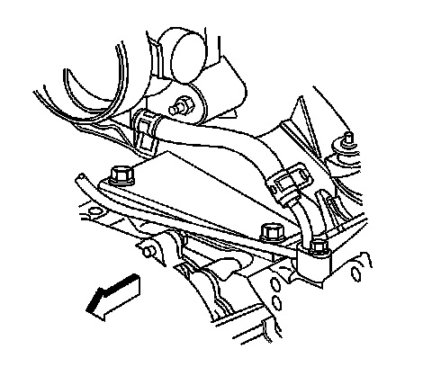
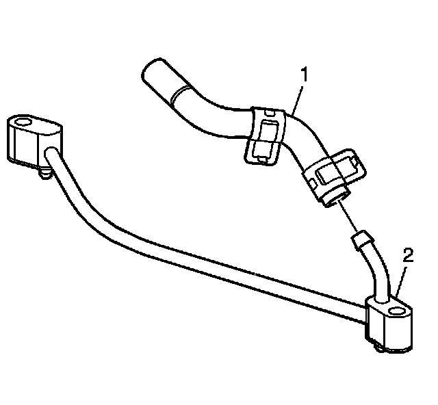

Coolant Air Bleed Hose Replacement
Coolant Air Bleed Hose Replacement
Removal Procedure

1. If necessary, remove the engine sight shield. Refer to Upper Intake Manifold Sight Shield Replacement for the 4.8L, 5.3L, and 6.0L engines.
2. Position the coolant air bleed hose clamp at the throttle body.
3. Remove the coolant air bleed hose from the throttle body.

4. Position the hose clamp at the pipe.
5. Remove the coolant air bleed hose (1) from the pipe (2).
Installation Procedure
1. Install the coolant air bleed hose (1) to the pipe (2).
2. Position the hose clamp at the pipe.
3. Install the coolant air bleed hose to the throttle body.
4. Position the coolant air bleed hose clamp at the throttle body.
5. If necessary, install the engine sight shield. Refer to Upper Intake Manifold Sight Shield Replacement for the 4.8L, 5.3L, and 6.0L engines.
6. Add engine coolant, if necessary.